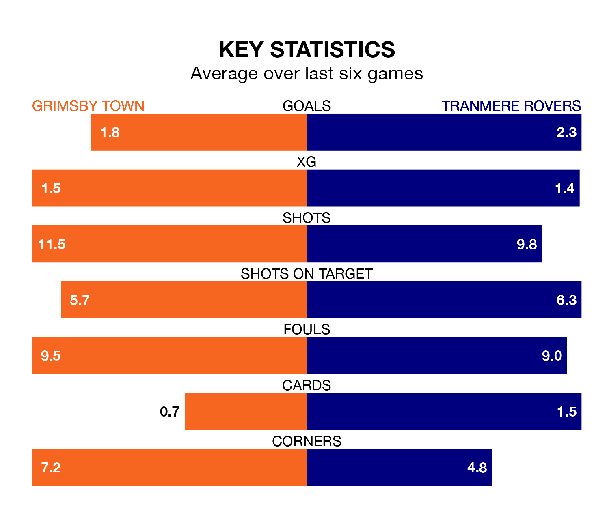

Tranmere Rovers travel to Grimsby Town on Saturday in EFL League Two.
The visitors come into the game on the back of a defeat in their last match, having lost to Milton Keynes Dons 2-1 at home, with a goal from Kieron Morris.
The Mariners, meanwhile, drew their last match, 5-5 against Notts County, with their goals scored by Abobaker Eisa, Danny Rose, Harry Clifton and Harry Wood.
With 40 goals in 27 games so far this season, Grimsby are scoring at the league's average rate with 1.5 goals per game. And they are conceding more than average, letting in 49 goals at a rate of 1.8 per game.
Tranmere are also average scorers, with 1.5 goals per game. They have also conceded 1.5 goals per game.
In the last 10 years, Grimsby and Tranmere have played each other on nine occasions. Grimsby won two of them, Tranmere four, and they drew three times.
On average, the Mariners scored 1.2 goals and Tranmere 2.0 in those matches.
Their last meeting was on October 7, when they played out a 2-2 draw.
Town are 19th in the table after 27 games, of which they have won six and drawn 10, earning 28 points.
Rovers are one place ahead of the Mariners in 18th, with 10 wins and three draws putting them on 33 points.
The home side are in disappointing form in EFL League Two, with one win and two draws from their last six games.
With four wins and two losses over that period, the visitors' form is much better – they have taken 12 points from 18, compared to Grimsby's five.
Updated: 09:18 (UTC), 23/01/24